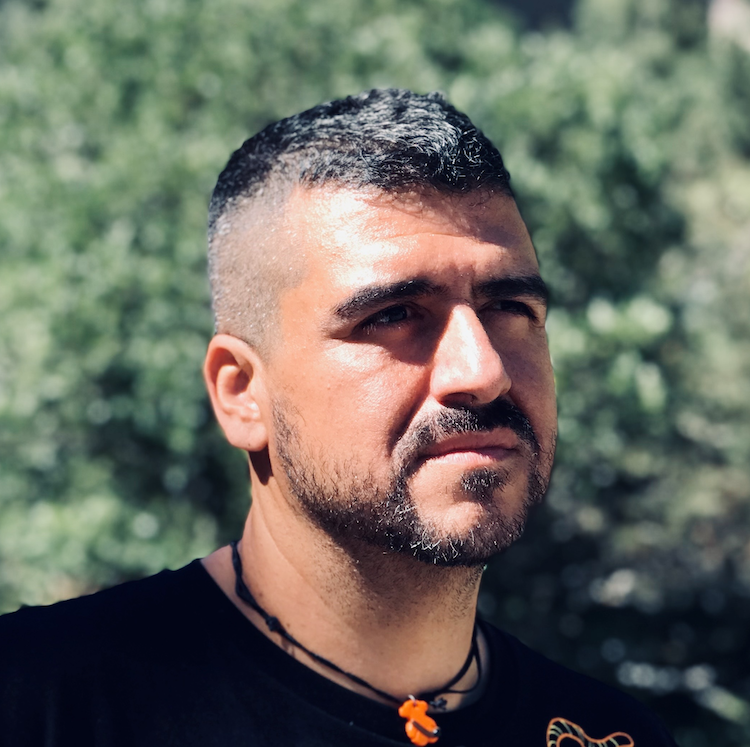

01 AI transformation
I design the patterns and set the standards for AI adoption: MCP integrations, LLM fine-tuning, RAG systems, intelligent automation, and agent orchestration. Hands-on from research to production-ready, productizable solutions.
Software Architect · AI Engineer
// architecture, AI, and the craft of software
I design cloud-native platforms and AI-driven products, taking them from architecture to production.

Currently
Software Architect · AI Innovation Lead
Optiva Media / EPAM
Based in
Madrid, Spain
Focus
AI transformation · MCP · cloud-native
Open to opportunities
Profile
I am a software engineer who stays current with emerging technologies and frameworks. For me, learning is a habit, not a phase: whether it is technical, product-focused, or managerial, knowledge never goes to waste.
I am looking for a role with an international perspective, centered on architecture and product development, where I can grow together with the product, mentor teams, and expand beyond the purely technical toward team management and product ownership.
I have the blessing of working on my hobby. Software ideation, design, and development are what I do for a living, and what I would do anyway.
Expertise
I design the patterns and set the standards for AI adoption: MCP integrations, LLM fine-tuning, RAG systems, intelligent automation, and agent orchestration. Hands-on from research to production-ready, productizable solutions.
Team management, mentoring, resource planning, and product ownership. I lead technical teams while staying fully hands-on.
UI/UX design and development. Interfaces as considered as the systems behind them.
Scalable services and microservices across the stack.
Infrastructure as code, containerized services, and serverless patterns on AWS and beyond.
Experience
Nov 2022 – present
Optiva Media / EPAM
Software architect, full-stack developer, and AI researcher. I design and build cloud-native platforms and AI-driven products, coordinate the internal PoC community, support project management and clients, and act as resource manager for new joiners.
MCP Gateway
Architecture and full-stack development of a cloud-native platform for a global sportswear retailer, focused on Model Context Protocol integrations, using AWS, TypeScript, Python, and Docker.
AI-based PoCs and internal products
Led the design and implementation of LLM-based proofs of concept and internal products with commercial potential: RAG systems, intelligent automation, and agent architectures. Tech lead and AI standards owner for a team of up to ten engineers.
Retailer shop automation
Tech lead and architect for a modular monolith integrating warehouse automation, built on an event-driven architecture with Java 18, Spring Boot, and Kafka. Supervised production rollout across two retail locations and a demo site.
Platform services
Claims microservices, a global API gateway migration, a high-throughput image scaling service (up to 400k requests in short windows), a RAG onboarding platform, and automated media feedback analysis with AI face blurring.
Mar 2022 – Nov 2022
Valasis / Savi
Frontend ownership of a legacy application: refactoring legacy functionality, redesigning screens and UX, growing the test base, and feeding product improvements back to the product team. Node.js on AWS.
Dec 2015 – Mar 2022
Beeva / BBVA Next Technologies
Frontend and backend software architect across multiple products: Themis (frontend architecture, React/Meteor), Clever (backend API and messaging), AIT Studio (UI R&D, Polymer), and OpenWeb, a long-running platform refactored to a service-based architecture on AWS with a migration to TypeScript.
Jun 2010 – Dec 2015
Atos (Atos Research & Innovation)
Architecture, development, and technical advisory on European Commission research projects including uService, BIVEE, iCORE, FIspace, and FITMAN. Also corporate analyst on the BBVA SLA project.
2000 – 2010
Across Coritel, Atos Origin, Southern Star, Wairbut, Same, and Glokal Consulting: Java and SOA development for banking (Barclays, BBVA), retail (Carrefour, DIA), telecom (Vodafone), and public sector (Ministry of Justice, HP), progressing from senior developer to corporate analyst.
Community
Education
References
There is no environment, language, or technology that Francisco does not know, and if there is something he does not know, his voracious curiosity will turn him into an expert in a short period of time. I have worked with many professionals, but none of the extreme value of Francisco Calle.
Francisco is a very focused and smart web architect. He has done great work, not only from the technical point of view, but also from the business and perspective one.
Francisco has a beautiful analytical mind, matched with a boundless enthusiasm for his work. When the unexpected strikes, he is a first-line responder who will not give up until the problem is solved. I would work with him again without hesitation.
Francisco has a high professional level within the areas he manages, and a high level of commitment to the projects he participates in, even beyond his assigned tasks. He relates well with his colleagues.
A thorough professional who far exceeds expectations in every way, both technically and personally. Self-sufficient, quickly productive, with fast development and good quality. Very proactive, with excellent commitment and involvement.
Francisco has worked with great determination and commitment. He stands as a natural leader given his expertise and his ability to investigate and always provide innovative solutions. A hard worker, self-taught, always up to date, and generous in sharing knowledge with his peers.
Architecture, AI, product design, or just a good conversation about software. I would love to hear from you.